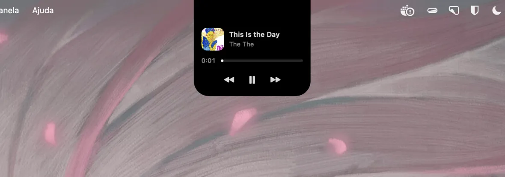
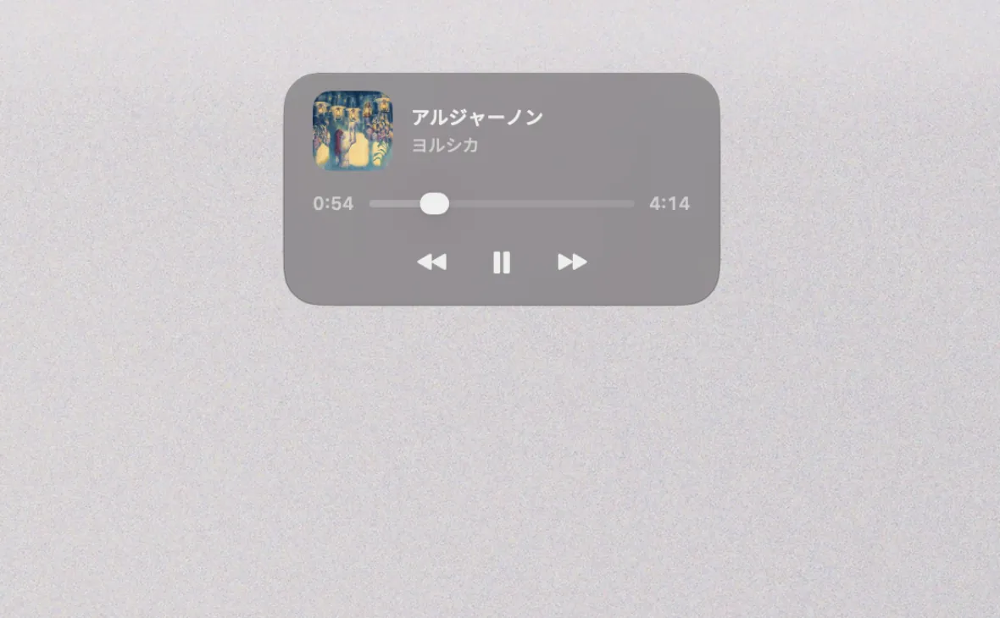
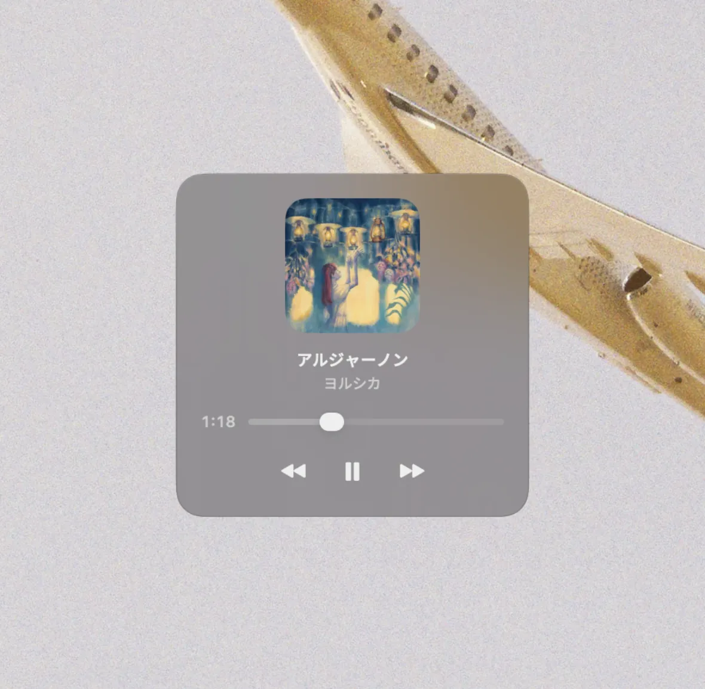
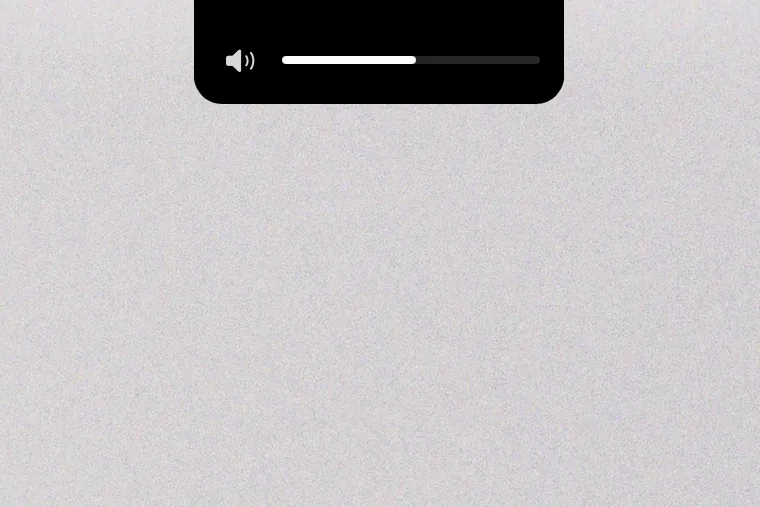
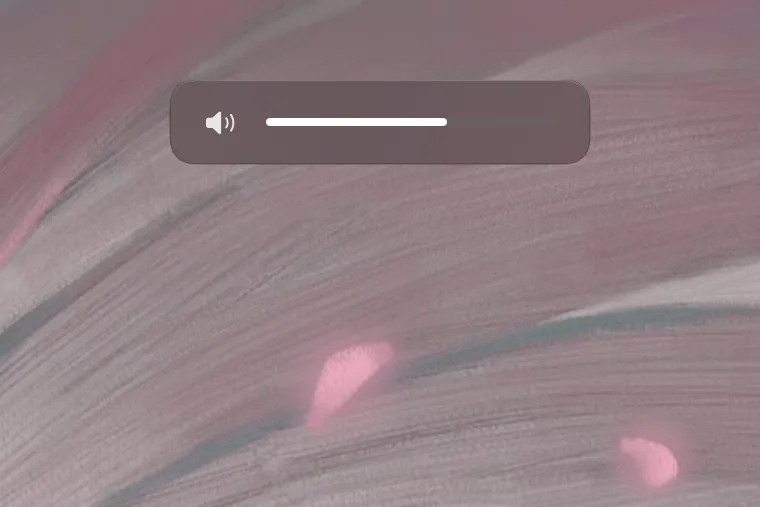
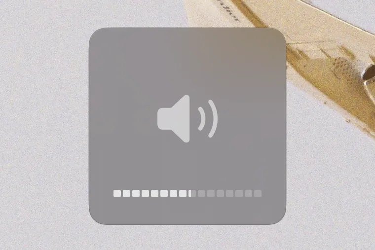

for macOS 14+ · free & open source
Crema shows what's playing — artwork, a touch of its color, the controls you reach for — and gives volume, brightness and the keyboard backlight indicators of their own, optionally replacing the system's. Native, and out of the way.
three styles
A style for every display. An override for any single one. The tiles in Settings draw each style on your actual wallpaper — you choose by looking, not by guessing.

01 · notch
The surface is the notch — black on black, flush with the bezel, as if the hardware had always known. A new track shows a sliver — title and waveform — then tucks away; click the cutout and the track opens. On a Mac without one, it gracefully becomes the Card.

02 · card
A translucent panel below the menu bar. Dark rim, light on top — the edge reads on a bright desk and disappears on a dark one. Its indicator is yours to pick: a thin line, or the whole card filling to the level.

03 · classic
A quiet square near the bottom — the native HUD's old address. Sixteen segments, half-steps included. No surprises for muscle memory.
your keys, your indicators
Flip one switch and Crema replaces the system's volume, brightness and keyboard-backlight indicators with its own. Same voice as the player, on every screen. Off by default. Reversible any time. Quit, and the native HUDs are back — you never get locked in.
A key Crema can't honour — a display it doesn't drive, a device with no volume — goes back to the system whole, indicator and all. A taken key always owes you feedback.
If a channel fails mid-press, only that channel steps aside; it re-engages by itself when the device returns, and the menu bar tells you if it doesn't.
A brightness key acts on the display under your cursor — the built-in panel Crema drives itself; any other, it hands the key whole to whoever does. Dimming a screen you aren't looking at is not an improvement on the system HUD.
Its brightness curve, Crema's HUD — external monitors included, each bar drawn on the screen it belongs to, and a drag on it written back through BetterDisplay, on the very scale it reported.



what crema is
Crema does a few things — music, volume, brightness — and does them well. No widgets, no file shelf, no calendar, no accounts. It sits by the notch and waits. A smaller target, hit cleanly.
install
STEP 02
Crema lives in the menu bar — look up top, not in the Dock.
STEP 03
Crema asks on first launch, in a short welcome tour that also sets your style and indicators — every step skippable. The permission is what lets it handle your volume and brightness keys; it runs fine without, too.
xattr -dr com.apple.quarantine /Applications/Crema.appMusic at the notch, indicators that match, and nothing else asking for your attention. Free, open source, and yours in one download.